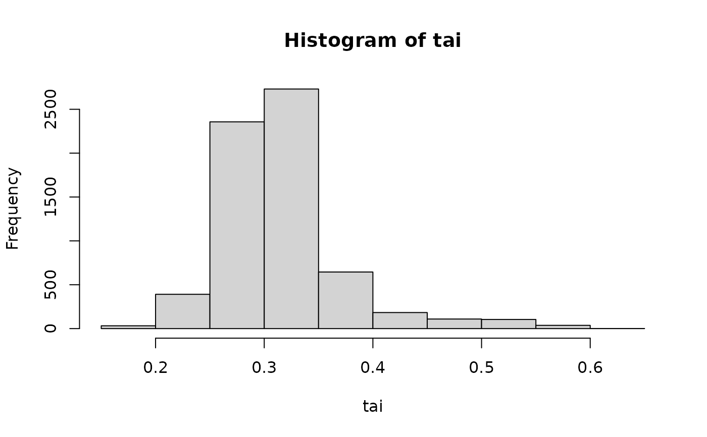

get_tai calculates the tRNA Adaptation Index (TAI) for each coding
sequence, which measures how well codon usage matches tRNA availability in
the cell. Higher TAI values indicate better adaptation to the tRNA pool,
suggesting more efficient translation.
Arguments
- cf
A matrix of codon frequencies as calculated by
count_codons(). Note: Start codons should be removed from sequences before analysis to avoid bias from universal start codon usage.- trna_w
A table of tRNA weights for each codon, generated using
est_trna_weight(). These weights reflect relative tRNA availability.- w_format
Character string specifying the format of tRNA weights: "cubar" (default, weights from cubar package) or "tAI" (weights from the tAI package format).
Value
A named numeric vector of TAI values. Names correspond to sequence identifiers from the input matrix. Values range from 0 to 1, with higher values indicating better adaptation to tRNA availability. It should be noted that the tAI package does not include codons that correspond to methionine in its calculation. In contrast, cubar requires removing the start codon and takes into account codons encoding methionine within the sequence. Correspondingly, cubar excludes initiator tRNA (iMet in eukaryotes or fMet in prokaryotes), and focuses on the anticodons that correspond to regular methionine.
References
dos Reis M, Savva R, Wernisch L. 2004. Solving the riddle of codon usage preferences: a test for translational selection. Nucleic Acids Res 32:5036-5044.
Examples
# calculate TAI of yeast genes based on genomic tRNA copy numbers
w <- est_trna_weight(yeast_trna_gcn)
# note: check_istop is suppressed to facilitate package development.
# We suggest enable this option for real sequence analyses.
yeast_cds_qc <- check_cds(yeast_cds, check_istop = FALSE)
cf <- count_codons(yeast_cds_qc)
tai <- get_tai(cf, w)
head(tai)
#> YPL071C YLL050C YMR172W YOR185C YLL032C YBR225W
#> 0.2950325 0.4463443 0.2818053 0.3576659 0.3150053 0.3092631
hist(tai)
